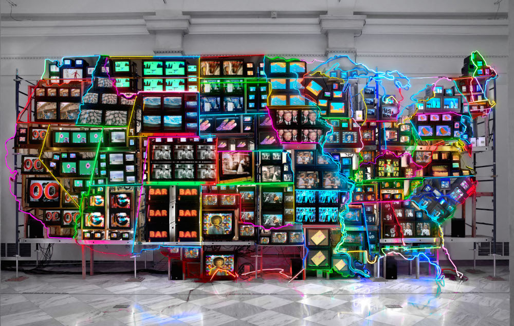

VideoArt
Video Art, o que é?
É uma forma de expressão artística que utiliza a tecnologia do vídeo em artes visuais. Desde os anos 60, a videoart está associada a correntes de vanguarda.

Voltar para primeira página